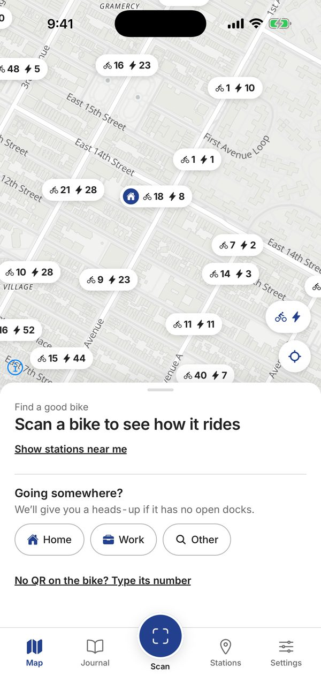
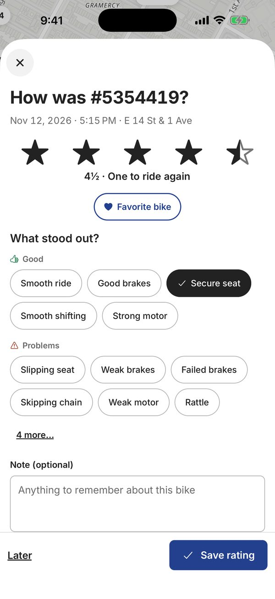
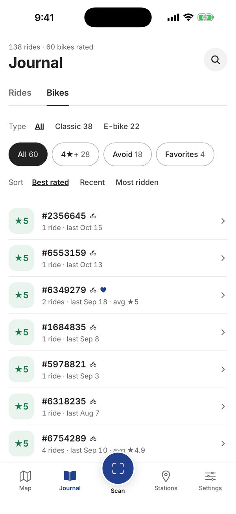
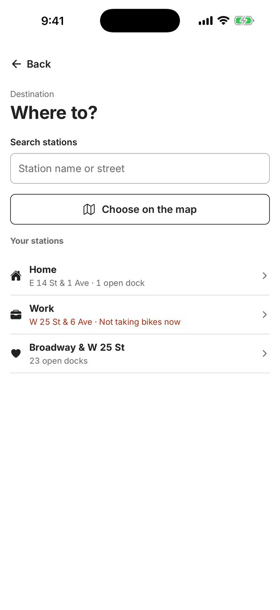

Remember which bikes ride well.
Pedals is a private journal for New York bike share riders. Scan a bike’s QR code to see how it rode before, rate it when you dock, and over time you’ll know which bikes to take and which to skip.

Scan it like you always do
Scan a bike’s QR code in Pedals, the same way you would in the Citi Bike app. You see how it rode last time, and if it’s good, or new to you, Pedals opens Citi Bike on that same bike, so you go straight to unlocking it. Citi Bike still unlocks the bike and handles payment.
- Scan the bike in Pedals
- See its rating from your last ride
- Unlock in Citi Bike on the same bike

Rate a ride in seconds
When you dock, give the bike stars and a couple of tags like “Smooth ride” or “Weak brakes”. A note is optional. The next time you scan that bike, you’ll see what you thought of it.

Remember the good ones
Every bike you’ve ridden, best first. Filter by classic or e-bike, see the ones to avoid, and find where a bike you liked was last docked.

Never arrive to a full station
Label stations Home and Work. Pick where you’re going and Pedals tells you if it runs out of open docks while you ride.
Private by design
Your journal stays on your phone. No account, no ads, no tracking. Sharing ratings with other riders is optional, anonymous, and never includes your notes. Privacy policy
Test Pedals on Android
Pedals for Android is in a closed test before its public release. On your Android phone, signed in with the Google account you use for the Play Store:
- Join the tester group. groups.google.com/g/pedals-tester
- Become a tester. Open the test page and tap Become a tester.
- Install Pedals from the Play Store link on that page. It can take a few minutes to appear after you join.
- Keep it installed for 14 days. Using it on a ride or two is plenty.
Found a bug? Email pedals@kyuhunl.ee and attach the file from Settings → Save troubleshooting log.